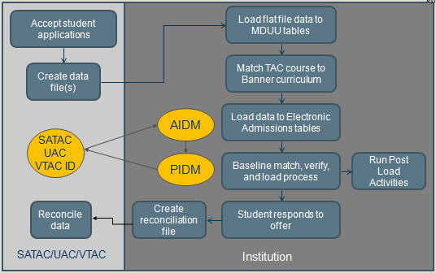
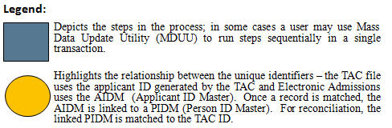

TAC Overview
The TAC Use content provides information about the Banner Tertiary Admissions Centre (TAC) product.
The information includes the procedures, tables, and file details for processing South Australian Tertiary Admissions Centre (SATAC), Universities Admissions Centre (UAC), and Victorian Tertiary Admissions Centre (VTAC) applications and sending reconciliation data to each specific TAC.
TAC Processing
Banner TAC enables users to load TAC files into Banner, match TAC courses to Banner curriculum rules and produce reconciliation data to send back to each TAC, covering application and return files for SATAC, UAC, and VTAC.
- Institution loads files to temporary tables
- Data in each file is matched against existing Banner data and loaded to standard tables
- Institution sends reconciliation data to TAC after enrolments have been processed.


Functions and features
Banner TAC is made up of various procedures and pages to define elements, values, and processes that are required to set up and to process the Banner load.
- Load flat file data to the staging tables
- Match TAC course codes to Banner programs
- Load to baseline Electronic Admissions (EA) tables
- Run baseline process to match, verify, and load
- Load additional data to baseline tables
- Provide reconciliation data to TAC.Note: User profiles are included in the release so that clients can use profile-based security to have control over users who are authorised to run the Banner TAC processes. Loading the user profiles for running the processes is optional.
Refer to the File Details section for more information on SATAC, UAC, and VTAC file details.
System parameters
A set of default system parameters, which are used to configure the system, is delivered with Banner TAC. Use the Report System Parameters (SKARSYS) page to configure this data to your institution's needs. Refer to the System Parameters section for details on these parameters.
Data reconciliation
Details the functionality to produce TAC reconciliation files.
For each TAC, a set of reconciliation MDUU activities is provided, allowing users to produce reports on enrolled students which can be matched back to TAC application files. This allows institutions to complete their obligations to the TACs. Where a specific format for the reconciliation data is required, such as for VTAC, the activity produces the data in the required output format.
Banner TAC uses rule sets in MDUU to generate the snapshot, extract, and export files for reconciliation. Seed data is delivered to enable you to begin designing your reconciliation processes.
To understand how the reconciliation files are built, you must understand the process, task, and activity elements of MDUU. Refer to the Banner Mass Data Update Utility Use for a complete explanation of tasks and activities, and how these elements work to support TAC processing requirements.
This document uses the following key terms.
- Process: This represents a set of tasks sharing a common business area. The MDUU security allows you to associate users and user classes to a given process. If this functionality is activated, only users assigned to a given process will be able to execute this process.
- Task: This is a set of activities that is carried out as part of a process, such as taking a snapshot of data from the original data sources and gathering them in more synthetic (eventually generated) tables.
- Activity: This is a processing element that is carried out as part of a task, such as a data copy, or a data transformation. An activity updates a single table and can be reused in several tasks.
Snapshot processing
The snapshot process populates TAC reconciliation snapshot data from baseline tables, Solution Centre tables, locally developed tables, and tables from third-party applications.
The process allows selected target tables in the snapshot data structure to be populated and can refresh (remove and insert) or update (add new rows and update existing rows) the snapshot.
The structure of the snapshot tables is maintained by MDUU under a schema called MDUUREP.
When running the snapshot, you can select which snapshot tables to populate. You can also purge the selected snapshot tables before re-inserting rows.
- Create snapshot data
- Define the column mappings for the snapshot
- Define the rules to generate the snapshot population
- Initialise the snapshot
- Populate the snapshot
- Increment the snapshot (add or remove records without refreshing the snapshot from scratch).
Extract processing
After the initial student data snapshot activity has taken place, it is transformed and organised before production of the reconciliation file.
The extract process populates the extract based on snapshot data and, where necessary, it transforms the snapshot data into the format needed for the extract. The process allows selected target tables in the extract data structure to be populated and can refresh (remove and insert) or update (add new rows and update existing rows) the extract.
- Create extract data
- Define the column mappings for the extract
- Define the rules to generate the extract population
- Use expressions and functions to derive values based on the contents of the snapshot
- Initialise the extract
- Populate the extract
- Increment the extract (add or remove records without refreshing the cohort from scratch).
Export processing
The export process populates the export based on extract data.
The process allows selected target tables in the export data structure to be populated and can refresh (remove and insert) or update (add new rows and update existing rows) the export.
- Create export data
- Define the mappings for the CLOB export column
- Define the rules to generate the export population
- Initialise the export
- Populate the export
- Increment the export (add and remove records without refreshing the cohort from scratch)
- View the export.
Refer to Providing reconciliation data to SATAC for SATAC activities, Provide reconciliation data to UAC for UAC activities, and Provide reconciliation data to VTAC for VTAC activities.
Prerequisites
Minimum required releases for Banner TAC 8.8.
- Banner TAC 8.7
- Banner General 8.9.3
- Banner Student 8.13
- Banner Accounts Receivable Release 8.5
- Banner Mass Data Update Utility (MDUU) 8.2
- Banner ASCGEN 8.7.0.1